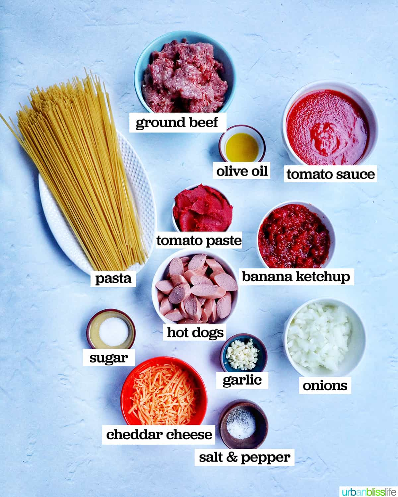

Spaghetti Bolognese

Description
Spaghetti Bolognese is a classic Italian pasta dish made with spaghetti topped with a rich meat-based tomato sauce. It is savory, slightly tangy, and very comforting.
Spaghetti Bolognese Ingredients
- 100g spaghetti
- 100g ground beef
- 1/2 small onion (chopped)
- 1 clove garlic (minced)
- 1/2 cup tomato sauce
- 1 tablespoon olive oil
- Salt to taste
- Pepper to taste
- Dried oregano (optional)

*Images is for illustration purpose only
Tools
- Pot
- Frying pan
- Spatula or wooden spoon
- Knife
- Cutting board
- Strainer
How To Cooks (Steps)
- Boil water in a pot and cook the spaghetti according to the package instructions.
- Heat olive oil in a pan over medium heat.
- Sauté onion and garlic until fragrant.
- Add ground beef and cook until browned.
- Add tomato sauce, salt, pepper, and oregano. Simmer for 5–10 minutes.
- Drain the spaghetti and serve with the sauce on top.